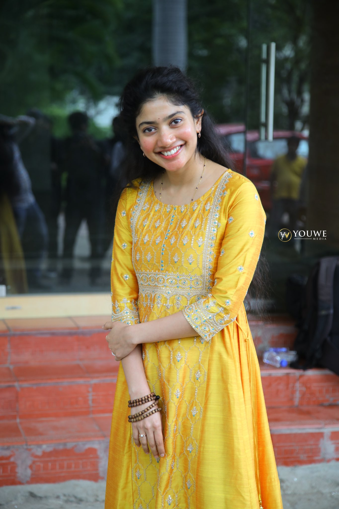
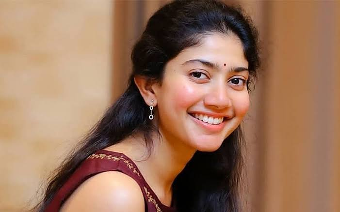
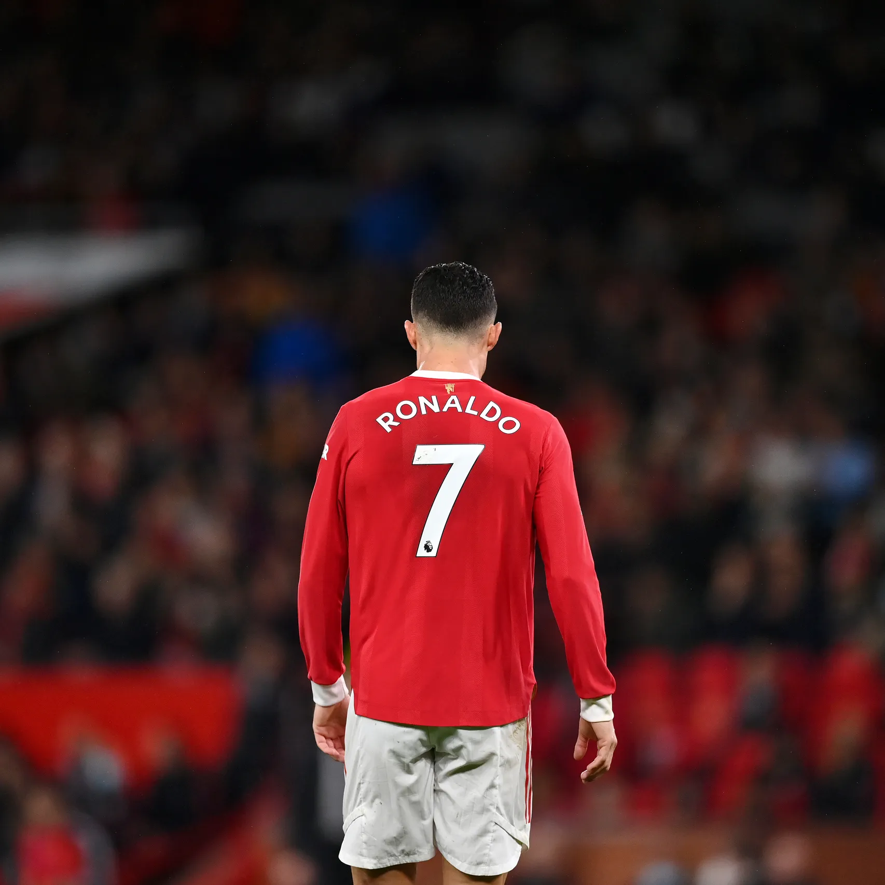
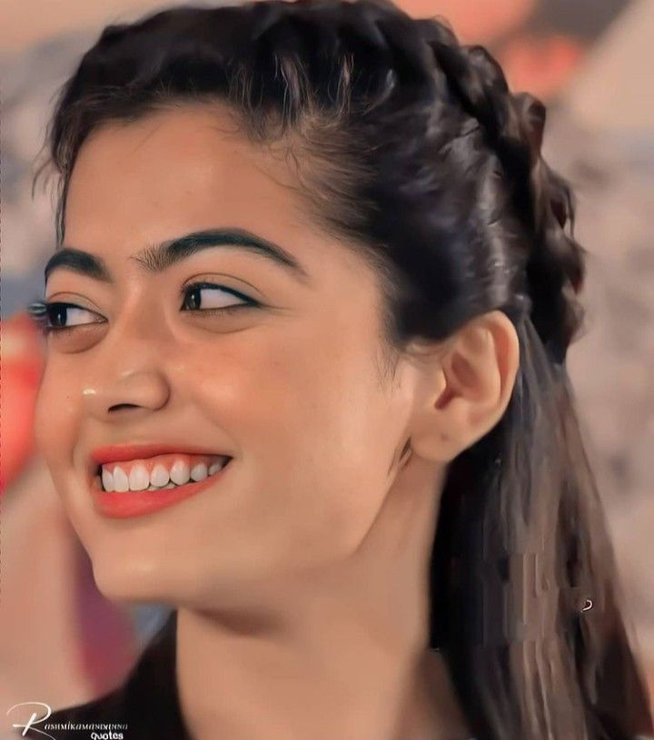
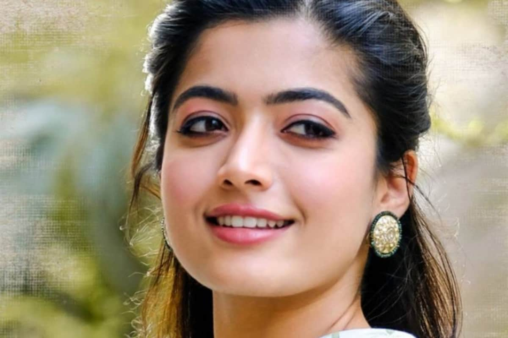
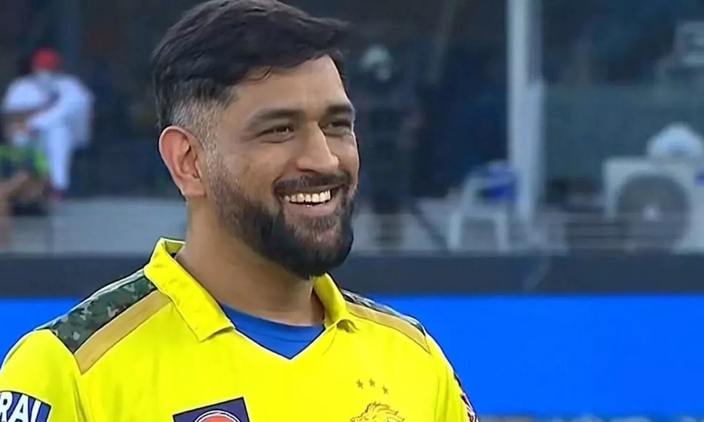
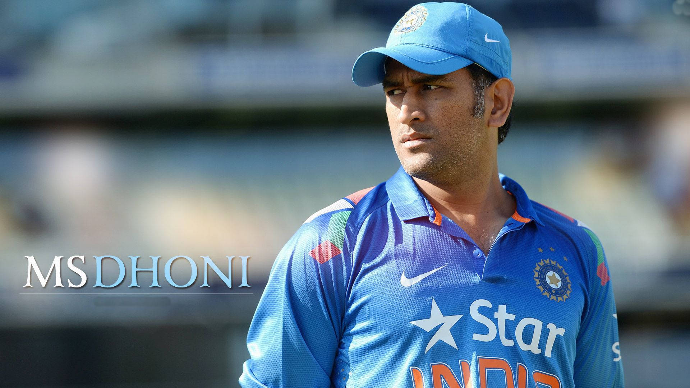

Famous Actor & Actress
Sai Pallavi
Sai Pallavi Senthamarai Kannan (born 9 May 1992), known by her stage name Sai Pallavi, is an Indian actress
and dancer who works in Telugu, Tamil and Malayalam cinema. She has won several awards including four
Filmfare Awards South, and was featured by Forbes magazine as one of India's 30 under 30 in 2020.
Pallavi made her acting debut with Premam (2015), the second highest-grossing Malayalam film to that point,
for which she received critical praise. She has since established herself in Telugu, Tamil and Malayalam
cinema with acclaimed performances in successful films like Kali (2016), Fidaa (2017), Middle Class Abbayi
(2017), Maari 2 (2018), Love Story (2021) and Shyam Singha Roy (2021).
|

|

|
| Sai Pallavi |
Sai Pallavi |
Virat Kohli
Virat Kohli born 5 November 1988) is an Indian international cricketer and former captain of the India
national cricket team. Widely regarded as one of the greatest batsmen of all time, Kohli plays as a
right-handed batter for Royal Challengers Bangalore in the Indian Premier League and for Delhi in domestic
Indian cricket. With 40 wins out of 68 tests, Kohli is India's most successful test captain, and one of the
most successful test captains of all time, behind only Graeme Smith, Ricky Ponting and Steve Waugh.
Kohli made his Test debut in 2011.[4] He reached the number one spot in the ICC rankings for ODI batsmen for
the first time in 2013.[5] He has won Man of the Tournament twice at the ICC World Twenty20 (in 2014 and
2016). He is also the leading run scorer of all time in T20 Internationals as well as T20 World Cups.

|

|
| Virat Kohli |
Virat Kohli |
Cristiano Ronaldo
Cristiano Ronaldo dos Santos Aveiro GOIH ComM (Portuguese pronunciation: [kɾiʃˈtjɐnu ʁɔˈnaɫdu]; born 5
February 1985) is a Portuguese professional footballer who plays as a forward and captains the Portugal
national team. He is currently a free agent. Widely regarded as one of the greatest players of all time,
Ronaldo has won five Ballon d'Or awards[note 3] and four European Golden Shoes, the most by a European
player. He has won 32 trophies in his career, including seven league titles, five UEFA Champions Leagues,
and the UEFA European Championship. Ronaldo holds the records for most appearances (183), goals (140), and
assists (42) in the Champions League, goals in the European Championship (14), international goals (118),
and joint-most international appearances (196). He is one of the few players to have made over 1,100
professional career appearances, and has scored over 800 official senior career goals for club and country.
He is the only male player to score in five World Cup tournaments.
Ronaldo began his senior career with Sporting CP, before signing with Manchester United in 2003, at age 18,
winning the FA Cup in his first season. He would also go on to win three consecutive Premier League titles,
the Champions League and the FIFA Club World Cup; at age 23, he won his first Ballon d'Or. Ronaldo was the
subject of the then-most expensive association football transfer when he signed for Real Madrid in 2009 in a
transfer worth €94 million (£80 million), where he won 15 trophies, including two La Liga titles, two Copa
del Rey, and four Champions Leagues, and became the club's all-time top goalscorer. He won back-to-back
Ballons d'Or in 2013 and 2014, and again in 2016 and 2017, and was runner-up three times behind Lionel
Messi, his perceived career rival. In 2018, he signed for Juventus in a transfer worth an initial €100
million (£88 million), the most expensive transfer for an Italian club and for a player over 30 years old.
He won two Serie A titles, two Supercoppa Italiana trophies and a Coppa Italia, before returning to United
in 2021. He left in 2022.
|

|

|
| Cristiano Ronaldo |
Cristiano Ronaldo |
Rashmika Mandhana
Rashmika Mandanna (born 5 April 1996)[1] is an Indian actress who works predominantly in Telugu and Kannada
films besides few Hindi and Tamil films.[2] She is a recipient of four SIIMA Awards and a Filmfare Award
South.[3] She made her acting debut with the Kannada film Kirik Party (2016), and went on to work in the
Telugu film Chalo (2018), the Tamil film Sulthan (2021), and the Hindi film Goodbye (2022).
Rashmika's most commercially successful films include Anjani Putra (2017), Geetha Govindam (2018), Yajamana
(2019), Sarileru Neekevvaru (2020), Bheeshma (2020), Pogaru (2021), Pushpa: The Rise (2021), and Sita Ramam
(2022).
|

|

|
| Rashmika Mandhana |
Rashmika Mandhana |
MS Dhoni
Mahendra Singh Dhoni (listen); born 7 July 1981) is an Indian former international cricketer who was captain
of the Indian national cricket team in limited-overs formats from 2007 to 2017 and in Test cricket from 2008
to 2014. He is also the current captain of CSK in the IPL. He led India to victory in three ICC trophies
2007 ICC World Twenty20, 2011 Cricket World Cup and 2013 ICC Champions Trophy, the most by any Indian
captain. Under his captaincy India also won 2010 and 2016 Asia Cup. Also under his leadership India won 2010
and 2011 ICC Test Mace and 2013 ICC ODI Championship. A right-handed wicket-keeper batsman.[1] He scored
over 10,000 runs in One Day Internationals, with the reputation as one of the best finishers in the game. He
is also one of the greatest wicket-keepers in the history of cricket.
In Indian domestic cricket he played for Bihar and Jharkhand Cricket team. He is the captain of Chennai
Super Kings (CSK) in the Indian Premier League. He captained the side to championships in the 2010, 2011,
2018 and 2021 editions of IPL league. Also under his captaincy Chennai Super Kings (CSK) Won Champions
League T20 two times, in 2010 and 2014.
|

|

|
| MS Dhoni |
MS Dhoni |
Copyright © 2022 , Famous Actor & Actress
Developed & Maintained by Shubham Sharma